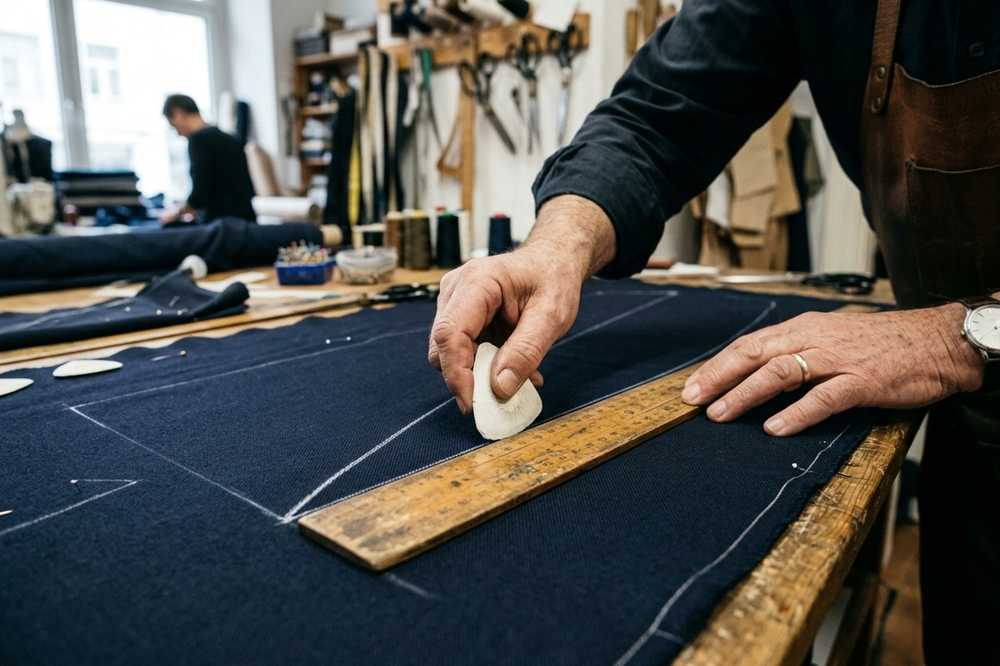
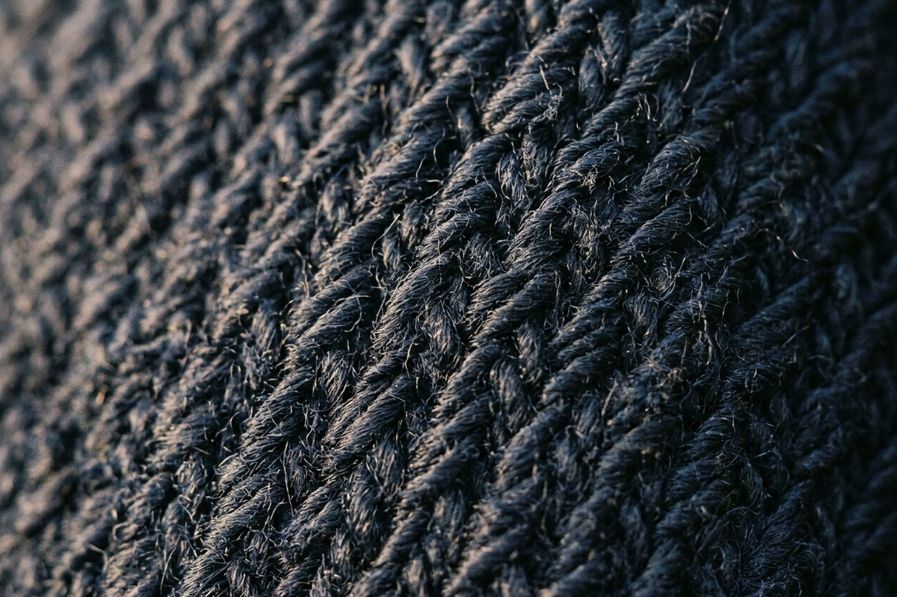
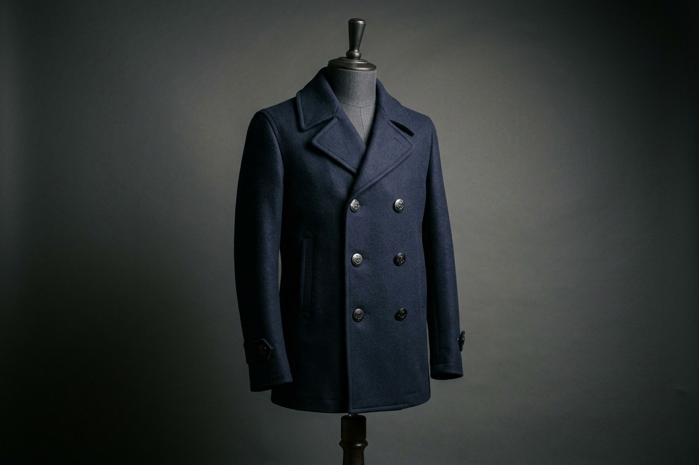
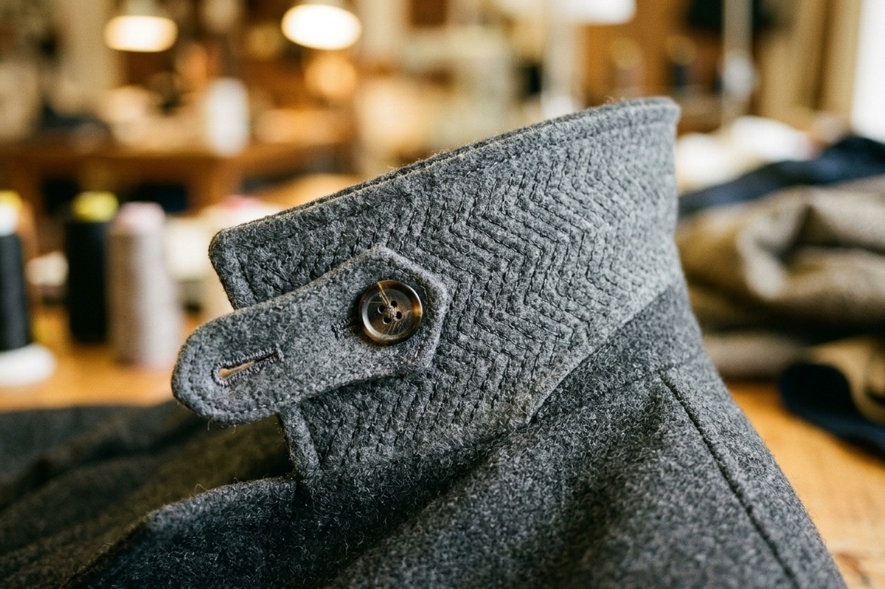
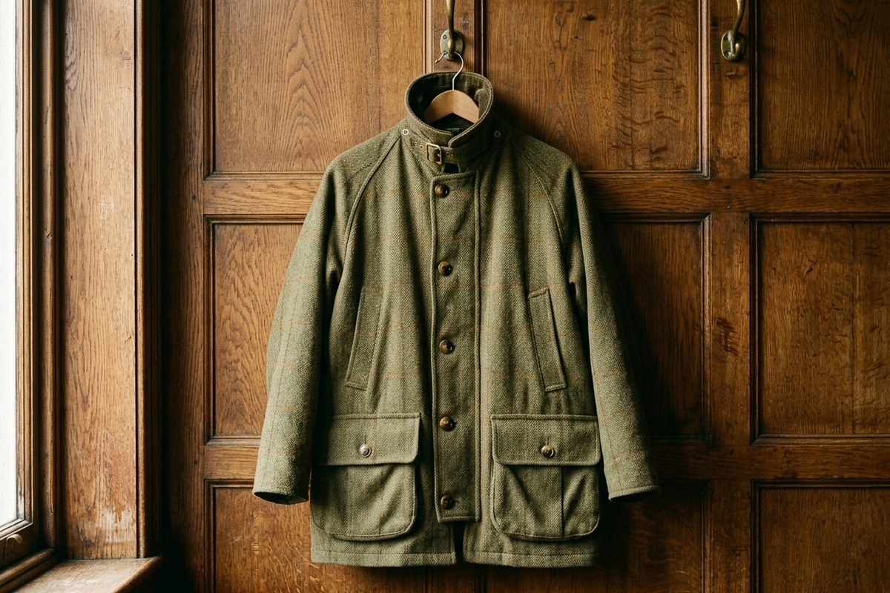
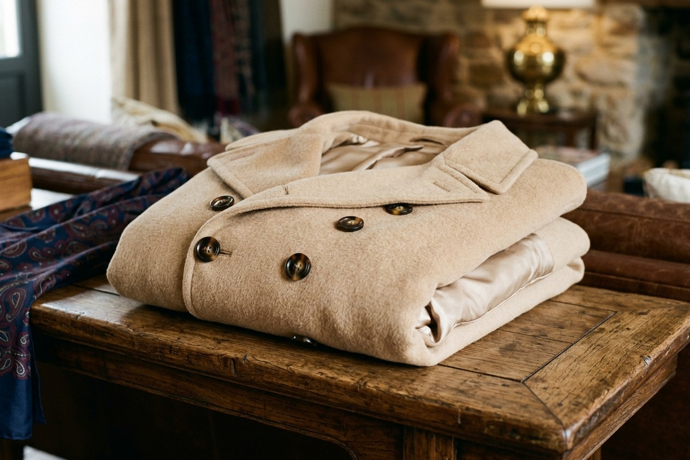

Centuries of Naval Outerwear, Forged for Modern Defiance
Founded on the conviction that a gentleman's winter coat should be an architectural barrier against the elements, Crombie Anchor crafts unyielding woolen coats that outlive generations.
Individual Pattern Drafting on Naval Canvas
Every coat commission begins not with standard graded cardboard templates, but with raw drafting paper and tailor's chalk on our mahogany tables. We record 28 distinct anatomical measurements, accounting for shoulder slopes, chest breadth, and arm swing posture.
This exacting geometric precision ensures that even our heaviest 34-ounce greatcoats move in effortless harmony with the body, delivering total arm articulation without pulling the hem.

Scottish Highland Milled Melton Cloth
Our cloth is woven in family-operated mills in the Scottish borders that have supplied royal maritime fleets for over two centuries. Heavy wool fleeces are carded, spun, and woven into a dense twill before undergoing intensive wet fulling.
The resulting fabric possesses a dense, sheared face where the weave structure is virtually concealed. Rain droplets form natural spherical beads upon its surface, rolling away before touching the wearer.

The Admiralty Peacoat Stance
The classic naval double-breasted closure originated to protect sailors aloft on freezing rigging yards. By overlapping two heavy layers of melton cloth across the vital organs, wind penetration is reduced to absolute zero.
We honor this functional maritime heritage with high convertible storm collars that button securely around the neck and deep corduroy-lined slash pockets that warm hands in sub-zero coastal squalls.

Hand-Pad Stitching of the Under-Collar
The defining mark of bespoke outerwear tailoring lies underneath the lapel collar. Our tailors spend five hours hand pad-stitching hundreds of tiny diagonal chevron stitches into dense under-collar melton felt.
This labor-intensive craft introduces a permanent three-dimensional spring memory that hugs the cervical spine closely without ever gaping, flipping outward, or collapsing during gusty winter walks.

The British Field Coat & The Camel Crombie
Two timeless silhouettes from our maritime design archives that continue to inform our modern outerwear commissions.

